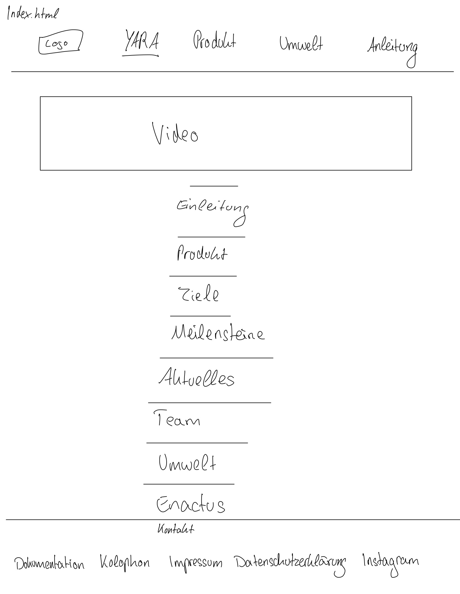
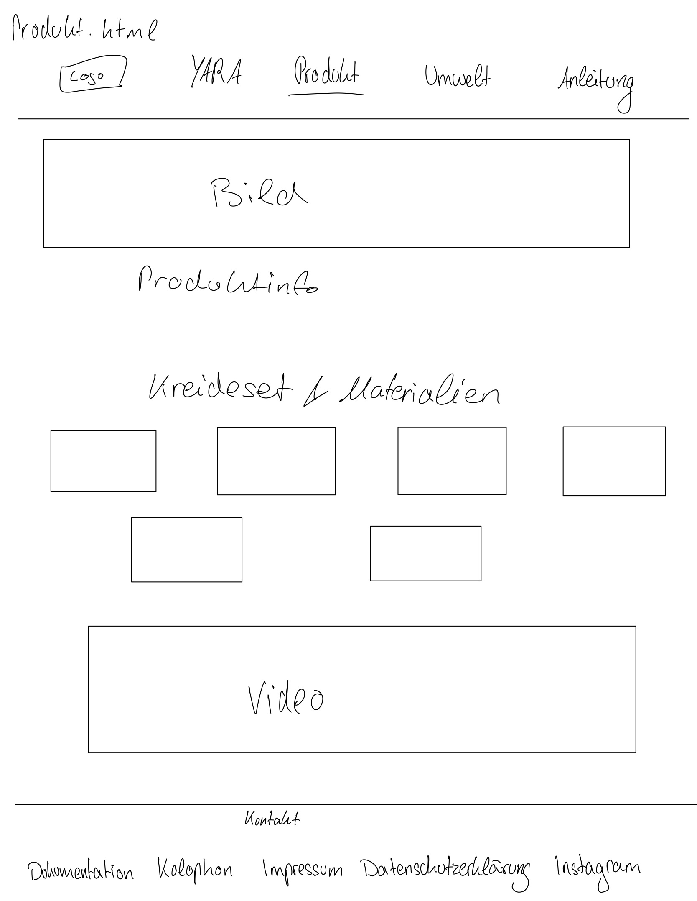
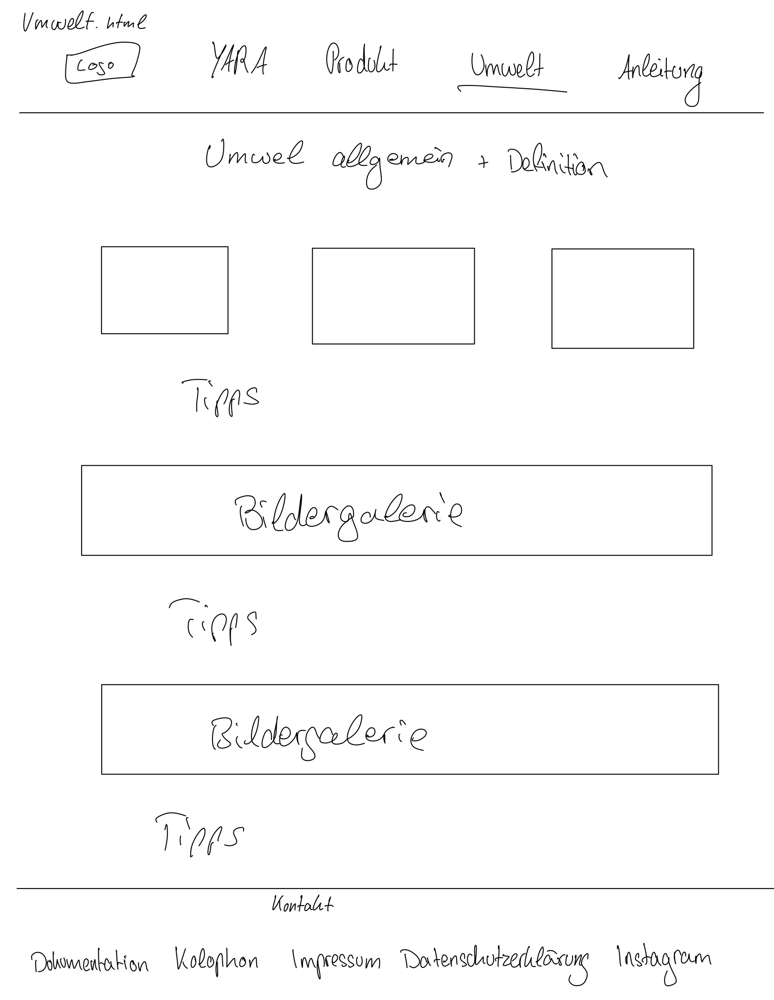
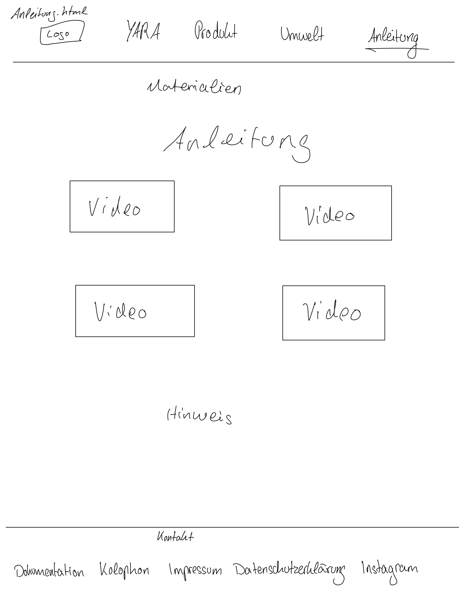
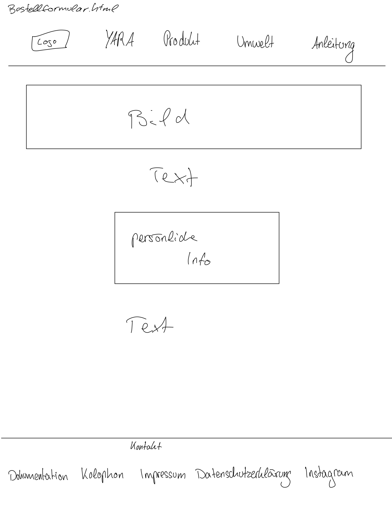

Projektdokumentation für Yara Education
Leni Lopau: LeLo5581, 750490
Lara Vollbracht: LaVo6004, 750597
1. Idee und Grafisches Konzept
Zu Beginn des Projekts haben wir uns intensiv mit der Frage beschäftigt, welche Emotionen unsere Website bei den Nutzerinnen und Nutzern hervorrufen soll. Dabei standen die Zielgruppe und der zentrale Zweck unseres Produkts im Mittelpunkt. Aus dieser Analyse heraus haben wir uns gezielt für Emotionen wie Neugier, Freude und Bewusstsein entschieden – Gefühle, die sowohl Kinder als auch Eltern ansprechen und zum Entdecken einladen sollen.
Vor diesem Hintergrund entstand ein grafisches Konzept, das klar strukturiert, verständlich, modern und besonders kinderfreundlich ist. Die Gestaltung soll zum Verweilen einladen und eine gewisse Ruhe ausstrahlen – zugleich soll sie dazu motivieren, sich tiefer mit dem Produkt und den dahinterliegenden Themen auseinanderzusetzen, etwa der Kreislaufwirtschaft.
Unsere Website verfolgt den Anspruch, vor allem bei Kindern ein Bewusstsein für Nachhaltigkeit, Umweltverantwortung und bewusstes Handeln zu schaffen. Dabei ist nicht nur der Inhalt entscheidend, sondern auch das visuelle Erscheinungsbild. Durch die gezielte Auswahl von Farben, Layout und Typografie entsteht ein Umfeld, das Interesse weckt, Orientierung bietet und spielerisch zum Nachdenken anregt.
2. Styletiles

Beim ersten Styletile haben wir uns intensiv mit der Farbauswahl aus dem offiziellen Logo von Yara-Education auseinandergesetzt. Unser Ziel war es, eine Farbgebung zu wählen, die weder aufdringlich noch grell wirkt und sich harmonisch ins Gesamtdesign der Website einfügt. Die Wahl fiel auf ein leicht abgewandeltes Blau, das eine ruhige, ausgeglichene Wirkung erzeugt und sich besonders gut als Hintergrundfarbe eignet, ohne vom eigentlichen Inhalt abzulenken.
Ergänzend zu diesem Grundton entwickelten wir eine pastellige Variante, die gezielt zur Hervorhebung einzelner Schlüsselbegriffe eingesetzt wird. Dadurch entsteht ein sanftes, aber wirkungsvolles visuelles System, das Orientierung bietet und die Lesbarkeit unterstützt.
Für die typografische Gestaltung entschieden wir uns für die Schriftart Georgia. Sie überzeugt durch ihre hohe Lesbarkeit – insbesondere in längeren Fließtexten – und fügt sich visuell wie inhaltlich stimmig in das Erscheinungsbild von Yara-Education und dessen Produkt ein.

Das zweite Styletile greift die spielerische Assoziation mit Straßenkreide auf: Der Hintergrund erinnert bewusst an eine asphaltierte Fläche – jenen typischen Ort, an dem Kinder ihre Kreativität mit Kreide ausleben. Um einen stimmigen Kontrast zu schaffen, haben wir die Farben aus dem Yara-Logo leicht modifiziert. Die resultierenden Akzentfarben setzen gezielt gestalterische Highlights und fügen sich harmonisch ins Gesamtbild ein.
Für die Überschriften haben wir die Schriftart Chalkduster gewählt, die durch ihre Struktur und Linienführung deutlich an Kreidezeichnungen erinnert und so den visuellen Charakter des Themas unterstreicht. Der Fließtext wird mit der Schrift Acumin Variable Concept in der Ausprägung Semibold dargestellt – eine Entscheidung, die sowohl Lesefreundlichkeit als auch gestalterische Klarheit gewährleistet.

Das dritte Styletile orientiert sich gestalterisch an der klassischen Schultafel – einem Symbol für den Einsatz von Kreide im schulischen Kontext. Der Hintergrund ist in einem satten Tafelgrün gehalten und mit einer feinen Textur versehen, um visuell an die Oberfläche einer echten Tafel zu erinnern.
Die Farbpalette wurde basierend auf dem offiziellen Produktdesign der Website entwickelt und gezielt angepasst, um klare Kontraste zum Hintergrund zu schaffen. So entstehen Akzentfarben, die innerhalb des Layouts als visuelle Highlights eingesetzt werden können.
Für die Überschriften haben wir erneut die Schriftart Chalkduster gewählt, da sie den Look von Kreidezeichnungen gut imitiert. Der Fließtext wird mit Source Sans Variable in der Gewichtung „Semibold“ dargestellt – eine typografische Wahl, die trotz der strukturierten Hintergrundfläche eine gute Lesbarkeit gewährleistet.
Alle Styletiles entstanden in Adobe Illustrator und wurden dort konzipiert und ausgearbeitet.
3. Ausarbeitung
Der erste Entwurf
Zunächst haben wir das Grundgerüst unserer Website erstellt. Somit gab es eine Startseite und drei Detailseiten: Das Produkt, das Projekt und die wichtigen Themen. Die Detailseite zur Anleitung haben wir hier erst verworfen, da wir uns nicht sicher waren, ob das Integrieren der Anleitung doch dem Verkauf des Kreidesets schaden würde.
Obwohl sich ein Burger-Menü auch rein mit HTML und CSS realisieren lässt, haben wir uns aus gestalterischen und funktionalen Gründen bewusst für eine feste Menüleiste entschieden – insbesondere, da wir auf JavaScript verzichten wollten.
Als zentrale Einstiegsseite dient unsere Index-/Startseite „Yara“, da wir zunächst unser Produkt vorstellen und gleichzeitig erläutern möchten, wer wir sind, was Yara-Education ausmacht und warum man unserem Kreideset vertrauen kann. Unser Ziel ist es, direkt zu Beginn ein Gefühl für das Projekt und die dahinterstehenden Werte zu vermitteln. Zur besseren Orientierung haben wir als Link zur Startseite das bereits vorhandene Logo von Yara-Education eingebunden. Die Reihenfolge der Seiten entstand aus einer Kombination aus inhaltlicher Logik, Nutzerfreundlichkeit und dem Wunsch, eine vertrauensvolle, informative und inspirierende Erfahrung zu schaffen.
Im Anschluss folgt die Produktseite, auf der wir detaillierter zeigen, was im Set enthalten ist, wie es funktioniert und was Käufer:innen erwarten dürfen. Hier geben wir einen vertieften Einblick und stellen die Materialien sowie Features anschaulich vor.
Die darauf folgende Seite widmet sich dem Thema „Umwelt“. Sie erklärt, warum Nachhaltigkeit, Kreislaufwirtschaft und Mülltrennung zentrale Anliegen unseres Projekts sind. Durch konkrete Beispiele und visuelle Elemente machen wir deutlich, wie unser Produkt diese Themen aufgreift und vermittelt.
Als letzte Seite in der Navigation haben wir bewusst die Anleitung zur Kreideherstellung platziert. Diese ist für alle zugänglich – unabhängig davon, ob das Set erworben wurde oder nicht. Damit möchten wir einen praktischen Mehrwert bieten: Die Anleitung zeigt zum einen, wie man Kreide selbst herstellen kann, und zum anderen verdeutlicht sie spielerisch zentrale Prinzipien von Wiederverwertung und Ressourcenbewusstsein.
Der Footer wurde anschließend mit verschiedenen Inhalten gefüllt – darunter Links zum Instagram-Account, zur Projektdokumentation, zum Kolophon, zum Impressum sowie zur Datenschutzerklärung. So erhalten Nutzer:innen auf einen Blick Zugang zu allen wichtigen Informationen.
Im nächsten Schritt haben wir die Texte und Bilder in die jeweiligen Seiten eingebunden und die Inhalte so strukturiert, dass sie anschaulich und leicht erfassbar sind.
Auf der Startseite soll direkt unterhalb der Menüleiste ein Header-Bild eingebunden werden, auf dem der Slogan “Das Gip’s doch nicht!” in halbtransparenter Schrift erscheint. Diese Gestaltung soll bereits beim ersten Besuch Neugier wecken und zum Weiterscrollen motivieren.
Als besondere Funktion haben wir eine interaktive Übersicht der Materialien im Set integriert – umgesetzt in Form eines Memory-Spiels. Dabei können Karten oder Boxen angeklickt werden, die sich dann drehen und auf beiden Seiten Informationen zum jeweiligen Material enthalten. Das bietet eine spielerische Möglichkeit, sich mit dem Produkt vertraut zu machen und einen ersten Eindruck davon zu gewinnen, was Käufer:innen erwartet.
Die endgültigen Änderungen
Im Zuge der finalen Umsetzung haben wir das Thema der Anleitung zur Kreideherstellung erneut aufgegriffen. Anfangs war geplant, diese Anleitung ausschließlich im Rahmen des Sets bereitzustellen. Letztlich haben wir uns jedoch bewusst dazu entschieden, sie als separaten Bereich in die Website zu integrieren – auch für jene Besucher:innen, die das Set nicht erwerben möchten. Unser Ziel war es, unabhängig vom Kaufinteresse einen Mehrwert zu bieten: Die Anleitung stellt einen wichtigen Beitrag zur Sensibilisierung für Recycling und Kreislaufwirtschaft dar – zentrale Werte, die das Projekt Yara-Education vermittelt.
Da der Verkauf des Sets weiterhin im Fokus der Seite steht und wir die Anleitung nicht in den Vordergrund rücken wollten, ist der entsprechende Menüpunkt bewusst an letzter Stelle in der Navigation platziert. So bleibt der Zugang dezent, aber vorhanden, ohne die kommerzielle Zielsetzung der Seite zu untergraben.
Die zuvor als eigenständige Detailseite geplanten Inhalte über das Projektteam und die Hintergründe zum Projekt wurden stattdessen in die Startseite integriert. Diese Informationen sind einerseits interessant für Besucher:innen, andererseits helfen sie dabei, die Startseite inhaltlich sinnvoll zu strukturieren und einen unmittelbaren Einblick in das Projekt zu geben.
Gestalterisch haben wir auf ein klassisches Header-Bild zunächst verzichtet, da sich der ursprünglich angedachte transparente Slogan nicht harmonisch in das Bildmotiv integrieren ließ. Allerdings wirkte die Seite dadurch im oberen Bereich visuell zu leer. Um diesem Eindruck entgegenzuwirken, haben wir uns entschieden, das Produktvideo, in dem das Kreideset vorgestellt wird, direkt am Seitenanfang zu platzieren. Es wird automatisch abgespielt und läuft in einer Endlosschleife, sodass der Einstieg in die Seite lebendig und anschaulich erfolgt, ohne dass Nutzer:innen aktiv starten müssen.
Darüber hinaus wurden verschiedene interaktive Elemente implementiert, um die Website sowohl funktional als auch visuell abwechslungsreich zu gestalten. Neben den bereits eingesetzten Flip-Cards auf Unterseiten haben wir auf der Startseite ein Swipe-Element integriert, mit dem verschiedene Bilder des Kreidesets durchgewischt werden können. Außerdem erweitern Infoboxen mit kompakten Informationen sowie eine automatisch laufende Bildergalerie zur Veranschaulichung von Themen wie Nachhaltigkeit, Mülltrennung und Recyclingkreisläufe das visuelle Angebot.
Ein weiteres Feature ist der sogenannte "Vorhang" – eine kurze Ladeanimation beim Aufrufen der Startseite. Sie sorgt für einen professionellen ersten Eindruck und stellt sicher, dass Inhalte nicht abrupt geladen erscheinen, sondern visuell eingebettet werden.
Insgesamt trägt diese Kombination aus informativen Inhalten, visuellen Medien und interaktiven Elementen dazu bei, das Interesse der Besucher:innen zu halten, die Botschaft des Projekts zu vermitteln und gleichzeitig ein modernes Nutzungserlebnis zu schaffen.
4. Typografie
Für die final umgesetzte Version der Website haben wir uns bewusst für die Serifenschrift Georgia entschieden. Diese Wahl steht im Kontrast zur kurzzeitig überlegten Gestaltung mit der verspielten Handschrift „Walter Turncoat“ und bringt eine neue gestalterische Richtung mit sich: mehr Seriosität, Struktur und Klarheit, ohne dabei an Zugänglichkeit zu verlieren.
Georgia ist eine klassische Serifenschrift, die speziell für eine gute Lesbarkeit am Bildschirm entwickelt wurde. Sie ist auf nahezu allen Endgeräten und Betriebssystemen vorinstalliert und kann darüber hinaus über Google Fonts als Webfont eingebunden werden. In unserem Fall wird sie über den CSS-Reset bereits global gesetzt.
Schriftschnitte und Einsatzbereiche
Wir verwenden Georgia ausschließlich in ihrer regulären Schriftschnittvariante, was zu einer ruhigen, ausgeglichenen Typografie führt. Die Schrift kommt sowohl im Fließtext als auch in Überschriften zum Einsatz und bietet damit ein einheitliches Schriftbild über die gesamte Website hinweg.
Für Überschriften arbeiten wir mit vergrößerter Schriftgröße (h2 { font-size: 2rem; }) und stärkerem Zeilenabstand, wodurch Inhalte klar strukturiert und leicht erfassbar bleiben. Die Standardtextgröße im Fließtext beträgt 1.5rem, was die Lesbarkeit auch auf kleineren Geräten sicherstellt.
Warum Georgia?
Im Kontext unseres Produkts (Kreide für den Bildungsbereich) war es uns wichtig, eine typografische Lösung zu finden, die Vertrauen, Lesbarkeit und Wertigkeit transportiert. Georgia erfüllt diese Anforderungen optimal. Ihre Serifenelemente wirken solide und kompetent, gleichzeitig bringt ihre gut lesbare Form eine gewisse Wärme und Nahbarkeit mit, die ideal zum pädagogischen Charakter von Yara-Education passt.
In Kombination mit dem dunklen Blau als Hintergrundfarbe (#2D3A4A) und der weißen Schriftfarbe ergibt sich ein starker Hell-Dunkel-Kontrast, der die Inhalte optisch hervorhebt und ein modernes, aufgeräumtes Gesamtbild schafft. Durch diese klare Farb- und Schriftstruktur wird der Inhalt der Website in den Mittelpunkt gestellt – ganz im Sinne unseres Konzepts, das die Lesbarkeit und Nutzerfreundlichkeit priorisiert.
Besondere Textbereiche wie Infoboxen, Verlinkungen oder Hinweise bei Interaktionen nutzen abgewandelte Farbkombinationen (z. B. weißer Hintergrund mit dunkler Schrift oder ein helles Blau für Links), bleiben aber typografisch im System. Dies sorgt für Konsistenz und visuelle Orientierung auf allen Ebenen.
5. Farben

Zu Beginn des Gestaltungsprozesses haben wir uns intensiv mit den offiziellen Projektfarben auseinandergesetzt, die bereits im Rahmen der Logogestaltung definiert wurden: Ein kräftiges Blau (RGB: 0, 74, 173), ein frisches Grün (RGB: 130, 189, 61), ein warmes Gelb (RGB: 247, 192, 74) und ein leuchtendes Rot (RGB: 255, 49, 49). Da unser Website-Thema auf einem realen Produkt basiert und das Projekt tatsächlich existiert, war es uns besonders wichtig, diese Farben sinnvoll und markenkonform in die Gestaltung zu integrieren. Sie sorgen für Wiedererkennung und verleihen dem Gesamtbild Authentizität.
Im Laufe der Ausarbeitung stellten wir jedoch fest, dass die Farben in ihrer ursprünglichen Intensität nicht immer den gewünschten Effekt erzielten – insbesondere in Bezug auf Lesbarkeit, visuelle Ausgewogenheit und Nutzerfreundlichkeit. Daher beschlossen wir, die ursprüngliche Palette als Grundlage zu behalten, sie aber gezielt durch Kontrastanpassungen und zusätzliche Töne weiterzuentwickeln.
Besonders überzeugend wirkte dabei der Blauton, der dem Produkt eine sachliche, seriöse und zugleich vertrauensvolle Erscheinung verleiht. Als zentrales Gestaltungselement entschieden wir uns für ein dunkles Blau (#2D3A4A) als Hintergrundfarbe, das Stabilität vermittelt und die anderen Farben visuell trägt.
Für den Fließtext wählten wir Weiß als Schriftfarbe, da dies einen klaren Kontrast schafft und eine hohe Lesbarkeit sicherstellt. Bei speziellen Inhaltselementen wie Infoboxen oder hervorgehobenen Abschnitten wurde das Farbschema umgekehrt: weißer Hintergrund, dunkelblaue Schrift. Diese Entscheidung sorgt für visuelle Konsistenz und eine eindeutige Hierarchie zwischen Haupt- und Zusatzinhalten.
Verlinkungen und Quellenangaben erscheinen in einem dezenten Hellblau (#99BBEB), wodurch sie auffallen, aber nicht dominant wirken. Zusätzliche Hinweise, etwa bei interaktiven Funktionen, sind in einem hellen Grau dargestellt – sichtbar genug, um zu helfen, aber nicht störend für den Lesefluss.
Der Header und Footer wurden bewusst einheitlich gestaltet, um dem Gesamtlayout einen verlässlichen Rahmen zu geben. Sie schaffen visuelle Orientierung und tragen maßgeblich zur strukturellen Klarheit bei.
Dank dieses durchdachten Farbkonzepts entsteht eine moderne, benutzerfreundliche Oberfläche, die das Projekt Yara-Education optisch stützt und seine inhaltlichen Werte überzeugend vermittelt.
Logovarianten


Das Logo wurde vom Projektteam in drei Varianten bereitgestellt: in Schwarz, in Weiß und als farbige Version, basierend auf den vier definierten Markenfarben – einem kräftigen Blau (#004aad), einem frischen Grün (#82bd3d), einem warmen Gelb (#f7c04a) und einem leuchtenden Rot (#ff3131). Die farbige Variante gilt als primäre Version und wird bevorzugt eingesetzt, da sie die Markenidentität am deutlichsten widerspiegelt.
Zu Beginn des Designprozesses wurde kurzzeitig über eine mögliche Anpassung des Logos nachgedacht – etwa bezüglich Farbgebung oder Form –, um es stärker in das neue Gestaltungskonzept einzubinden. Diese Überlegung haben wir jedoch bewusst verworfen. Das Logo wurde unverändert übernommen, um die visuelle Kontinuität und den Wiedererkennungswert der Marke zu bewahren, insbesondere da es sich um ein reales Produkt mit etablierten Markenelementen handelt.
Im weiteren Verlauf der Konzeptionsphase stellten wir fest, dass in früheren Webdesign-Entwürfen Farben zum Einsatz kamen, die nicht vollständig mit dem offiziellen Farbschema des Logos übereinstimmten. Um gestalterische Brüche zu vermeiden und dennoch kreative Spielräume zu schaffen, entwickelten wir zusätzliche Akzentfarben, die sich harmonisch ins Gesamtdesign einfügen. Diese Farben konkurrieren nicht mit dem Logo, sondern ergänzen es subtil und erweitern die visuelle Sprache der Website.
Durch die Kombination aus der ursprünglichen Markenidentität – repräsentiert durch das unveränderte Logo – und den neu definierten Farben innerhalb unserer Styletiles entstand ein konsistentes Designsystem. Es stärkt die Nutzerführung, unterstreicht die visuelle Hierarchie und sorgt für ein ausgewogenes Gesamtbild, das sowohl das Produkt als auch dessen pädagogischen Anspruch wirkungsvoll vermittelt.
6. Layout





Das Layout unserer Website wurde bewusst so gestaltet, dass es einen klaren, strukturierten Überblick über die Inhalte bietet, ohne überladen oder unübersichtlich zu wirken. Ziel war es, eine benutzerfreundliche und visuell ansprechende Oberfläche zu schaffen, die sowohl Kinder als auch Erwachsene intuitiv anspricht.
Wie bereits im Zusammenhang mit Farb- und Typografiekonzept erwähnt, übernehmen Header und Footer eine zentrale Rolle in der Gestaltung: Sie bilden einen wiederkehrenden Rahmen, der sich durch alle Seiten zieht und somit Gestaltungskontinuität und Orientierung schafft. Ihre konsistente Platzierung und Farbgebung stärken den Wiedererkennungswert und erleichtern die Navigation.
Die Startseite (index.html) ist so aufgebaut, dass sie sich visuell deutlich von den Unterseiten abhebt. Verschiedene Abschnitte (Sections) sind optisch klar voneinander getrennt, wodurch sich die Inhalte thematisch gliedern lassen. So erhalten Besucher:innen bereits beim ersten Scrollen einen schnellen Überblick über die wichtigsten Themenbereiche und den Aufbau der Website. Diese visuelle Gliederung unterstützt die inhaltliche Klarheit und hilft, die Vielfalt des Projekts sofort zu erfassen.
Interaktive Elemente – wie Flip-Karten, Buttons oder eingebettete Videos – sind gezielt über die verschiedenen Unterseiten verteilt. Damit möchten wir die Aufmerksamkeit der Nutzer:innen erhalten und sie zum Entdecken und Verweilen einladen. Diese Elemente setzen gezielte Impulse, ohne vom eigentlichen Inhalt abzulenken.
Zur weiteren visuellen Unterstützung kommen auf der gesamten Website Bilder und Videos zum Einsatz. Sie dienen nicht nur der Auflockerung, sondern auch der inhaltlichen Verdeutlichung, insbesondere für jüngere Zielgruppen. So kann beispielsweise das enthaltene Kreideset anschaulich vorgestellt und seine Anwendungsszenarien realitätsnah vermittelt werden – ein wichtiges Element, um das Produkt auch emotional erfahrbar zu machen.
7. Raster
Unsere Website basiert auf einem flexiblen, responsiven Layout, das sich dynamisch an unterschiedliche Bildschirmgrößen anpasst. Ziel war es, eine klare, aufgeräumte und benutzerfreundliche Struktur zu schaffen – unabhängig davon, ob die Seite auf einem Smartphone, Tablet oder Desktop genutzt wird.
Grundstruktur & Überlegung
Statt eines klassischen starren 12-Spalten-Grids haben wir uns bewusst für eine modulare, content-zentrierte Rasterstruktur entschieden. Die Basis bildet ein zentrierter Container mit max-width-Werten zwischen 800 px (für Texte) und 1200 px (für bildlastige Abschnitte), um die Lesbarkeit auf großen Bildschirmen zu optimieren, ohne dass Inhalte zu breit oder unübersichtlich wirken.
Details zur Grid-Struktur
- Spaltenanzahl:In der Regel 2–3 Spalten (z. B. bei der Flip-Karten-Galerie oder den Infoboxen), umgesetzt mit CSS Grid oder Flexbox.
- Breakpoints:
≥ 1200px: Inhalte werden mehrspaltig dargestellt, z. B. Bilder und Text nebeneinander.
≥ 768px und < 1200px: angepasste Layouts mit weniger Spalten oder größeren Abständen.
< 768px: Mobile Ansicht mit einspaltigem Layout und optimierter Schriftgröße. - Padding & Margins:
Seitenabstand (padding-left / padding-right) meist 1rem–2rem, je nach Viewport.
Vertikale Abstände zwischen Abschnitten: 2rem–4rem, um klare Trennungen zu schaffen.
Auto-Margins sorgen für eine zentrierte Ausrichtung der Inhalte auf großen Bildschirmen. - Bilder & Medien:Skalierbar über max-width: 100% und height: auto, um ein sauberes Einpassen ins Layout zu ermöglichen.
- Visuelle Trennung durch Linien: Ursprünglich wurden horizontale Trennlinien nur auf der Startseite eingesetzt, um Abschnitte voneinander abzugrenzen. Im weiteren Gestaltungsprozess haben wir diese Trennungslinien jedoch bewusst auf die gesamte Website ausgeweitet. Dadurch entsteht eine konsistente visuelle Struktur, die den Seitenaufbau für die Nutzer:innen klarer, übersichtlicher und besser erfassbar macht – besonders bei langen Textabschnitten oder inhaltlich vielfältigen Unterseiten.
Warum diese Struktur?
Diese freie Rasterlösung bietet größtmögliche Flexibilität für ein modernes, visuell ansprechendes und zugängliches Design. Anstatt uns durch ein starres Grid zu beschränken, konnten wir Inhalte gezielt gewichten, optische Hierarchien schaffen und die Darstellung gezielt an verschiedene Nutzungskontexte anpassen. Die durchgängige visuelle Struktur (inklusive der Abgrenzungslinien) fördert die Orientierung und trägt zur angenehmen Nutzererfahrung bei.
8. Responsive Webdesign
Unsere Website wurde im Responsive Design gestaltet. Das bedeutet: Ganz gleich, ob du uns auf dem Smartphone, Tablet, Laptop oder PC besuchst – Inhalte, Bilder und Navigation passen sich automatisch an dein jeweiliges Endgerät an. So bleibt die Nutzererfahrung intuitiv, barrierearm und visuell ansprechend – unabhängig von Bildschirmgröße oder Auflösung.
Gerade bei einem Bildungsprojekt wie Yara Education, das Kinder, Eltern und Lehrerinnen gleichermaßen erreichen möchte, ist eine geräteübergreifende Darstellung essenziell. Viele Nutzerinnen greifen mobil auf unsere Inhalte zu – sei es über das Smartphone im Unterricht oder auf dem Tablet zu Hause. Dank des responsiven Layouts können Informationen und Anleitungen immer optimal dargestellt werden.
Technisch umgesetzt wurde das Responsive Design mithilfe von CSS Media Queries, flexiblen Grid-Layouts und skalierbaren Bildern und Videos. Auch Elemente wie das Menü, Bildergalerien und interaktive Sektionen (z. B. Flip-Karten oder Videos) wurden so programmiert, dass sie sich automatisch anpassen.
Breakpoints & Medienabfragen
Es wurden drei Haupt-Breakpoints gesetzt:
- Kleine Bildschirme (max-width: 600px):Inhalte werden gestapelt, die Schriftgröße reduziert sich leicht, Navigation und Layout richten sich vertikal aus. Ideal für Smartphones.
- Mittlere Bildschirme (ab 640px):Hier wird eine moderate Schriftgröße verwendet. Elemente wie die Schritt-für-Schritt-Guides oder Navigation erhalten ein klareres Grid-Layout.
- Große Bildschirme (ab 1200px & 1920px):Die Inhalte werden weiter aufgezogen, unnötige Padding-Abstände entfallen, damit der verfügbare Platz optimal genutzt wird. Auf sehr großen Bildschirmen werden Elemente bewusst zentriert und vollflächig präsentiert.
- Responsive Design & Mobile First:Die Gestaltung folgt nicht strikt dem "Mobile First"-Prinzip, sondern orientiert sich eher an einem hybriden Ansatz: Es wird ein solides Desktop-Layout entwickelt, das durch gezielte Media Queries für kleinere Geräte angepasst wird. Der Fokus liegt dabei auf optimaler Lesbarkeit und Nutzerführung – unabhängig vom Endgerät.
9. Umsetzung mit HTML und CSS
Ziel war es, die einzelnen Bestandteile und Arbeitsschritte so aufzubereiten, dass sie für Kinder leicht verständlich und für Erwachsene zugleich informativ und ansprechend präsentiert werden. Die Inhaltsbeschreibung wurde strukturiert und visuell gegliedert. Dabei kamen HTML-Elemente wie section und article zum Einsatz, um eine übersichtliche Gliederung zu erzielen.
Die Materialien – darunter Gips aus Zitronensäuregewinnung, Farbwürfel und Bastelzubehör – wurden in einer geordneten Liste mithilfe von ul und li-Tags dargestellt. Ergänzende Lernangebote wie App-Zugänge, Spielmaterialien und Videoanleitungen wurden ebenfalls eingebettet, wobei das video-Element responsiv gestaltet wurde, sodass sich die Darstellung automatisch an verschiedene Bildschirmgrößen anpasst.
Sicherheitsrelevante Hinweise wurden in separaten aside-Elementen integriert und farblich hervorgehoben, um potenzielle Risiken deutlich zu machen, ohne dabei Ängste zu erzeugen. Die Kommunikation erfolgte dabei altersgerecht und klar.
Im Hinblick auf das Layout wurde mithilfe von CSS flexbox ein flexibles Header-Design erstellt, das sich dynamisch an verschiedene Endgeräte anpasst. Auf Smartphones wurde das Logo zentral oben positioniert, während die Navigation darunter erscheint. Auf größeren Bildschirmen blieb die klassische horizontale Struktur erhalten, mit dem Logo links und der Navigation rechts.
Durch den gezielten Einsatz von HTML und CSS entstand eine Webdarstellung, die interaktiv, übersichtlich und kindgerecht ist. Die verwendeten @media-Queries ermöglichen eine responsiv angepasste Gestaltung, die sowohl auf Tablets als auch auf Laptops und Smartphones gut funktioniert.
10. Hindernisse
Bevor wir überhaupt mit der Website gestartet sind, haben wir unsere Arbeit etwas erschwert, da Wir Probleme mit unseren Style-Tile und dem eigentlichen Design hatten. So haben wir im nachhinein unsere Style Tiles ein zweites Mal erstellt, da beim ersten Versuch noch kein Text auf dem Style Tile war. Das lag vor allem auch dadran, dass wir zu viel Informationen auf einmal hatten. Dass musste erstmal sortiert und die Texte für die Website gut gestaltet werden. Demzufolge haben wir die Style-Tiles und das Expose noch einmal überarbeitet, da es unseren Vorstellungen nicht mehr gerecht wurden.
Im Verlauf der praktischen Arbeit an unserer Website traten verschiedene gestalterische und technische Herausforderungen auf, insbesondere im Hinblick auf die Benutzerfreundlichkeit auf mobilen Endgeräten. Ein zentrales Problem bestand in der horizontalen Navigation, die bei kleineren Bildschirmgrößen zu lang war und daher unvollständig angezeigt wurde. Darüber hinaus führte die feste Positionierung der Navigationsleiste dazu, dass Inhalte teilweise überlappten oder nicht korrekt dargestellt wurden.
Ein weiteres Problem ergab sich bei der Bilddarstellung: Einzelne Bilder waren überproportional groß und passten sich nicht automatisch an die Displaygröße an. Besonders auf mobilen Geräten wirkte dies störend und führte zu einem unübersichtlichen Layout.
Auch die Abstände zwischen den einzlenen Bilder und Überschriften, Überschriften und Texten, etc. war oftmals nicht korrekt und einheiltlich.
Die Flip-Cards waren darüberhinaus auch zunächst ein Hinderniss, da wir diese gerne integrieren wollten, uns jedoch zunächst informieren mussten, wie dies ohne JavaScript realisiert werden kann.
Zur Lösung dieser Probleme wurde die Website mithilfe von CSS gezielt optimiert. Durch den Einsatz von Media Queries konnten Navigation und Inhalt an verschiedene Bildschirmgrößen angepasst werden. Zusätzlich wurde auf JavaScript verzichtet und stattdessen mit CSS-basierten Slidern und flexiblen Layouts gearbeitet. Der Fokus lag dabei auf einem klaren, responsiven Design, das sowohl auf Desktops als auch auf mobilen Geräten eine angenehme Benutzererfahrung ermöglicht.
11. Kolophon
Angaben zu genutzten Quellen, Tools, Inspirationsquellen, ggf. Bildnachweise mit Links:
Das Kolophon wurde auf einer seperaten html- Datei erstellt: Kolophon